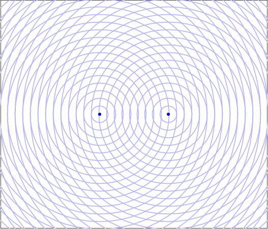
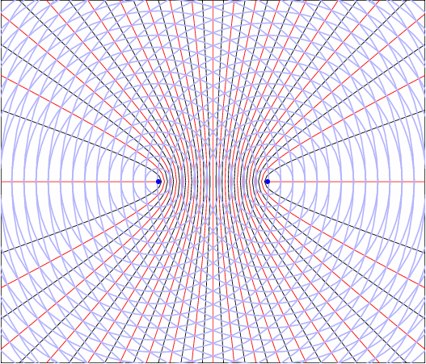

Interferência de ondas esféricas
Duas ondas com a mesma frequência e fase (coerentes)
Os círculos representam os pontos onde a função de onda é mínima. No meio entre dois círculos a função é máxima.
Nos pontos a vermelho há interferência construtiva: as duas funções de onda têm o mesmo valor (máximo ou mínimo). O resultado é uma onda com o dobro da amplitude.
Nos pontos pretos há interferência destrutiva: as funções de onda têm valores opostos e o resultado é nulo.
Os pontos de interferência construtiva ou destrutiva permanecem fixos.
Nos pontos de interferência constructiva, a diferença entre as distâncias às duas fontes é um múltiplo inteiro (n) do comprimento de onda. Neste caso n = -9, -8, ..., 0, 1, ..., 9 e cada valor de n corresponde a uma das curvas a vermelho.
Nos pontos de interferência constructiva, a diferença entre as distâncias às duas fontes é um múltiplo semi-inteiro (m) do comprimento de onda. Neste caso m = -17/2, -15/2, ..., -1/2, 1/2, ..., 17/2 e cada valor de m corresponde a uma das curvas a preto.